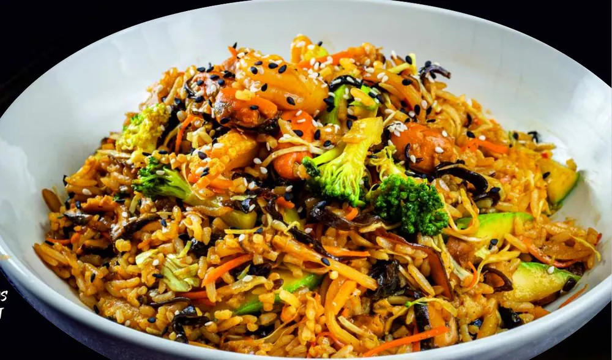

Ți-e poftă de tăiței, sushi sau pui teriyaki, dar nu vrei să ieși din casă? Poți comanda de la Wok and Noodles prin Glovo, Wolt sau direct la telefon, zilnic între 11:00 și 23:00. Ca să nu dai banii pe ceva care ajunge moale sau rece, îți spunem sincer ce rezistă cel mai bine la livrare și ce e mai bun mâncat la restaurant.

Cum comanzi de la Wok and Noodles
Ai trei variante, toate zilnic, între 11:00 și 23:00:
| Variantă | Când o alegi |
|---|---|
| Glovo | Ai deja aplicația și vrei să urmărești curierul pe hartă |
| Wolt | La fel, dacă folosești Wolt. Compară taxa de livrare din ziua respectivă, poate diferi |
| Telefon: 0770 803 320 | Ai o comandă mare, ai o alergie sau vrei ceva personalizat |
Zona de livrare și taxa sunt stabilite de fiecare platformă și depind de adresa ta, așa că le vezi exact în aplicație înainte să plasezi comanda.
Ce rezistă cel mai bine la livrare
Nu orice preparat călătorește la fel de bine. Din experiența noastră, astea ajung aproape identice cu cele servite la masă:
- Tăiței la wok — țin căldura bine și nu se înmoaie în 20–30 de minute. Bolul personalizat pornește de la 26 lei.
- Preparatele cu orez — pui teriyaki, vită cu ciuperci, Devil Chicken, orez prăjit cu fructe de mare. Orezul ține căldura și sosul.
- Sushi — se servește oricum rece, deci nu pierde nimic pe drum. Platourile (de la 75 lei) sunt ideale pentru acasă.
- Supele cu tăiței — vin ambalate separat, iar o porție de 650g e o masă completă (de la 29 lei).
Ce e mai bun mâncat la restaurant
Suntem sinceri: preparatele crocante își pierd din crocant în cutie, din cauza aburului. Pui crispy, creveți butterfly, calamari, tempura sau platoul Spicy Crispy sunt bune și livrate, dar sunt excelente abia proaspete, la masă. Dacă le comanzi acasă, deschide cutia imediat ce ajunge, ca să iasă aburul.

Comandă pentru grup: cât iei
Comanzi pentru birou, pentru un meci sau o seară cu prietenii? O regulă simplă care funcționează:
| Persoane | Ce să comanzi |
|---|---|
| 2 | 2 boluri de wok sau un platou de sushi de 500g + 1 bol de wok |
| 4 | 2 platouri de sushi + 2 boluri de wok + pachețele de primăvară |
| 6–8 | 3 platouri de sushi + 3–4 boluri de wok + Platoul Spicy Crispy (900g) |
Pentru comenzi mari, mai ales la birou, sună-ne înainte la 0770 803 320, ca să pregătim totul să ajungă în același timp.
Sfaturi ca mâncarea să ajungă perfectă
- Comandă înainte de orele de vârf. Între 13:00–14:00 și 19:00–21:00 aplicațiile sunt cele mai aglomerate. Cu 20–30 de minute mai devreme, câștigi timp.
- Scrie alergiile în observații. Și, pentru alergii serioase, sună-ne direct.
- Cere sosul separat dacă știi că mâncarea stă puțin până o mănânci.
- Reîncălzește tăițeii în tigaie, nu la microunde. Două minute, cu o lingură de apă, și sunt ca proaspeți.
- Nu știi ce să alegi? Citește ghidul nostru de tăiței sau ghidul de sushi.
Întrebări frecvente
Livrați mâncare asiatică în tot Galațiul?
Livrăm prin Glovo și Wolt, în zonele acoperite de aceste platforme în Galați. Zona exactă și taxa de livrare le vezi în aplicație, în funcție de adresa ta.
Care e programul de livrare?
Zilnic, de luni până duminică, între 11:00 și 23:00.
Ce preparate rezistă cel mai bine la livrare?
Tăițeii la wok, preparatele cu orez, sushi-ul și supele. Preparatele crocante (crispy, tempura) sunt bune și livrate, dar își pierd din crocant din cauza aburului din cutie.
Pot comanda telefonic?
Da, la 0770 803 320. Recomandăm telefonul mai ales pentru comenzi mari sau când ai alergii și vrei să vorbești direct cu noi.
Cât comand pentru 4 persoane?
Ca reper: 2 platouri de sushi, 2 boluri de wok și o porție de pachețele de primăvară.